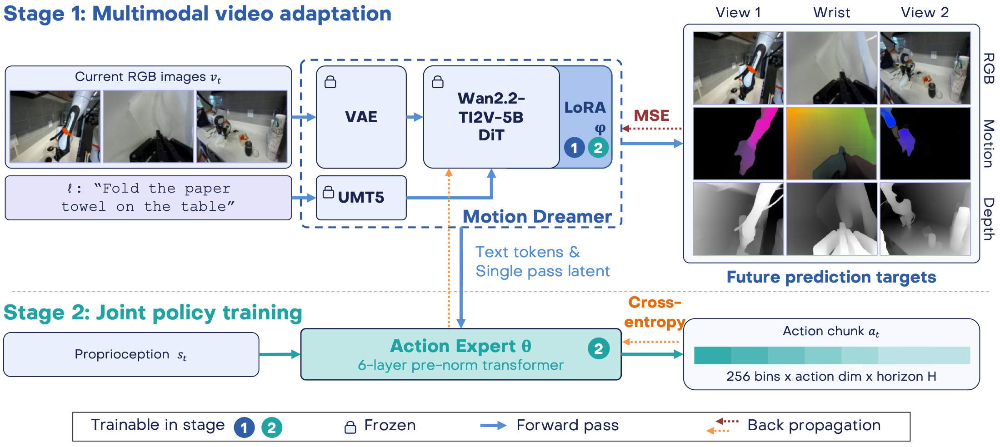

Abstract
We introduce Motion World Models (MWMs), a framework for language-conditioned visuomotor policy learning that jointly predicts future RGB frames, dense pixel motion, and relative depth with RGB-only visual conditioning. MWMs adapt a pretrained image-text-to-video diffusion model into a Motion Dreamer. Given the current RGB observation and a language instruction, the Motion Dreamer predicts a video using view tiling to combine camera views and all three modalities in each frame. The predicted motion and geometry make future scene changes explicit, providing richer cues for robot control than RGB alone. Then a transformer Action Expert maps the Motion Dreamer's internal features to robot action chunks in one forward pass.
Our joint training design makes effective use of the pretrained diffusion model, enabling adaptation with limited data and modest fine-tuning. Joint motion and depth prediction also improves the quality of predicted RGB frames. Across multiple robot learning datasets, MWMs achieve higher task success rates than strong baselines, including RGB-only world models. We are releasing the code and checkpoints.
LangToMo[2] and DAWN[1] (CVPR 2026) forecast a single-view motion map with image diffusion; we view them as earlier instantiations of MWMs.
Method
One pretrained video model, Wan2.2-TI2V-5B[3], predicts RGB, motion, and depth. We adapt its diffusion transformer (DiT) with LoRA, keeping the base weights frozen.

At control time, the Action Expert uses one DiT pass, language, and robot state to predict an action sequence. No video is decoded.
Dense Pixel Motion
Motion is encoded in HSV: hue shows direction and brightness shows strength. Hover over the motion image to inspect a pixel.
Hover over the motion image
Results
On CALVIN[4] ABC→D, models train on environments A–C and face 1,000 five-task chains in unseen environment D. MWMs-Plus complete 4.74 tasks on average; MWMs complete 4.63—the best results among methods without extra training data.
| Method | Extra data |
Tasks completed in a row (%) | Avg. len ↑ | ||||
|---|---|---|---|---|---|---|---|
| 1 | 2 | 3 | 4 | 5 | |||
| With extra training data (robot or human video pretraining, inherited robot-pretrained weights) | |||||||
| DAWN [1] | ✓ | 97.8 | 91.6 | 81.3 | 75.2 | 64.1 | 4.10 |
| VPP [6] | ✓ | 96.5 | 90.9 | 86.6 | 82.0 | 76.9 | 4.33 |
| FOFPred [7] | ✓ | 98.8 | 95.0 | 90.4 | 84.6 | 78.7 | 4.48 |
| FLOWER [8]‡ | ✓ | 99.4 | 96.7 | 92.2 | 86.9 | 79.6 | 4.55 |
| AVA-VLA [9]‡ | ✓ | 99.9 | 97.5 | 94.1 | 89.8 | 83.2 | 4.65 |
| Xiaomi-Robotics-0 [10]‡ | ✓ | 100.0 | 98.6 | 96.0 | 92.3 | 88.1 | 4.75 |
| MMaDA-VLA [11] | ✓ | 99.8 | 98.6 | 96.3 | 93.5 | 89.7 | 4.78 |
| CALVIN ABC training data only (same data as MWMs) | |||||||
| DAWN [1] | × | 98.1 | 91.3 | 78.8 | 71.2 | 60.6 | 4.00 |
| Seer-Large [12] | × | 96.3 | 91.6 | 86.1 | 80.3 | 74.0 | 4.28 |
| VLA-Adapter-Pro [13]‡ | × | 98.9 | 94.3 | 88.5 | 82.6 | 75.7 | 4.40 |
| FLOWER [8] | × | 99.3 | 96.0 | 90.3 | 82.3 | 75.5 | 4.44 |
| SLIM [14] | × | 99.3 | 96.7 | 92.3 | 87.1 | 80.2 | 4.56 |
| GeomVLA (RGB-D) [15] ‡ | × | 99.9 | 96.8 | 92.4 | 87.1 | 81.3 | 4.58 |
| MWMs (ours) | × | 99.5 | 97.3 | 93.6 | 89.1 | 83.0 | 4.63 |
| MWMs-Plus (ours) | × | 99.8 | 98.1 | 95.7 | 92.2 | 88.5 | 4.74 |
✓ Methods in the upper group use datasets beyond CALVIN ABC for policy or predictive pretraining, including human videos and inherited robot-pretrained weights; they are listed for reference and are not directly comparable. ‡ Our local tests of official released checkpoints; other results are source-reported. GeomVLA uses RGB-D input and was tested with its authors’ evaluator on the same 1,000 chains (source-reported avg. length 4.62, without chain success rates). Shading marks the best and second best per column among methods trained on CALVIN ABC data only. Our numbers are the best single checkpoints; over seeds, final checkpoints average 4.51 ± 0.07 (MWMs) and 4.69 ± 0.06 (MWMs-Plus).
Joint prediction improves RGB forecasting
Predicting motion and depth alongside RGB improves RGB forecasts on CALVIN and DROID[5], with lower DreamSim scores at every denoising-step count.
Motion and depth make scene changes explicit. The resulting features also improve robot control over RGB-only prediction.
CALVIN
DROID
- RGB only
- RGB + motion (CALVIN)
- RGB + motion + depth
View exact values
| Dataset / prediction | 1 | 2 | 4 | 8 | 16 | 32 |
|---|---|---|---|---|---|---|
| CALVIN · RGB only | 0.203864 | 0.127722 | 0.095422 | 0.089870 | 0.087808 | 0.092664 |
| CALVIN · RGB + motion | 0.180511 | 0.099587 | 0.080988 | 0.078146 | 0.078299 | 0.080783 |
| CALVIN · RGB + motion + depth | 0.168208 | 0.090309 | 0.076398 | 0.075143 | 0.075243 | 0.077274 |
| DROID · RGB only | 0.271477 | 0.201197 | 0.177373 | 0.166157 | 0.151933 | 0.154769 |
| DROID · RGB + motion + depth | 0.199537 | 0.152960 | 0.130236 | 0.120973 | 0.122703 | 0.125572 |
| Dataset | Motion and depth come from | Motion | Depth |
|---|---|---|---|
| CALVIN | RGB-only predictions (extracted) | 18.88 | 8.92 |
| Direct prediction, RGB + motion | 20.03 | – | |
| Direct prediction, RGB + motion + depth | 19.96 | 20.58 | |
| DROID | RGB-only predictions (extracted) | 17.26 | 18.06 |
| Direct prediction, RGB + motion + depth | 17.41 | 19.92 |
Ablations on CALVIN ABC→D
Each policy trains for 20,000 steps with three seeds. Scores are average tasks completed (mean ± standard deviation) at the lowest-validation-loss checkpoint (“min val.”) and the final checkpoint (“last”).
| Visual features | Image grid | Action Expert only | Action Expert + LoRA | ||
|---|---|---|---|---|---|
| min val. | last | min val. | last | ||
| DINOv3-B/16 only | – | 2.641 ± 0.177 | 2.576 ± 0.174 | – | – |
| Vanilla Wan (no predictive training) | 1×2 | 1.801 ± 0.140 | 1.801 ± 0.108 | 3.547 ± 0.106 | 3.741 ± 0.196 |
| World model, RGB | 1×2 | 3.060 ± 0.383 | 3.465 ± 0.030 | 4.353 ± 0.124 | 4.385 ± 0.063 |
| Motion only (DAWN-style) | 1×2 | 3.411 ± 0.026 | 3.431 ± 0.013 | 4.077 ± 0.220 | 4.119 ± 0.053 |
| MWMs, RGB + depth | 2×2 | 3.310 ± 0.110 | 3.389 ± 0.033 | 4.414 ± 0.064 | 4.457 ± 0.090 |
| MWMs, RGB + motion | 2×2 | 3.391 ± 0.190 | 3.485 ± 0.158 | 4.271 ± 0.350 | 4.505 ± 0.034 |
| MWMs, RGB + motion + depth | 2×3 | 3.517 ± 0.106 | 3.513 ± 0.077 | 4.528 ± 0.113 | 4.512 ± 0.067 |
| MWMs-Plus | 2×3 | – | – | 4.692 ± 0.059 | 4.658 ± 0.044 |
Joint RGB, motion, and depth prediction gives the best Motion Dreamer features. Continuing LoRA training during policy learning adds about one task per chain. MWMs-Plus checkpoints are at steps 16,000 and 20,000.
CALVIN · execution horizon
- MWMs-Plus
- MWMs (Linear)
View exact values
| Actions | MWMs-Plus | MWMs (Linear) |
|---|---|---|
| 6 | 4.429 | – |
| 7 | 4.543 | – |
| 8 | 4.657 | – |
| 9 | 4.670 | 4.508 |
| 10 | 4.699 | 4.515 |
| 11 | 4.698 | 4.499 |
| 12 | 4.743 | 4.598 |
| 13 | 4.688 | 4.572 |
| 14 | 4.699 | 4.543 |
| 15 | 4.737 | 4.572 |
| 16 | 4.703 | 4.535 |
| 17 | 4.680 | 4.514 |
Predict 17 actions, execute 12
| Decoder | min val. | last |
|---|---|---|
| L1 regression | 3.705 ± 0.346 | 3.991 ± 0.156 |
| Action diffusion | 4.199 ± 0.087 | 4.201 ± 0.070 |
| Discrete bins (ours) | 4.528 ± 0.113 | 4.512 ± 0.067 |
Predicting 256 bins per action dimension outperforms L1 regression and action diffusion. Executing 12 of the 17 predicted actions before replanning works best; MWMs-Plus remain strong across 8–17 actions.
| Method | Executed actions | ms / plan ↓ | ms / action ↓ | Peak GPU memory (GiB) |
|---|---|---|---|---|
| Text features cached per instruction | ||||
| MWMs-Plus | 12 | 97.0 | 8.1 | 10.85 |
| VPP[6] | 10 | 96.4 | 10.5 | 5.56 |
| Text encoded at every plan | ||||
| MWMs-Plus | 12 | 136.5 | 11.4 | 21.43 |
| VPP[6] | 10 | 104.2 | 11.2 | 5.56 |
| FLOWER[8] | 10 | 156.4 | 16.8 | 3.76 |
| AVA-VLA[9] | 8 | 147.2 | 18.5 | 14.85 |
| GeomVLA[15] | 10 | 310.6 | 31.1 | 5.68 |
One DiT pass per plan, with no video decoding. Timings use synthetic CALVIN-shaped inputs after warm-up.
Real-world control: fruit toy packing
An xArm7 robot lifts five fruit toys and places them into a basket, using static and wrist RGB views, a language instruction, and measured robot state. Each lift and placement is a separate subtask, for a maximum task length of ten. Each rollout stops at the first failure.

| Method | Avg. length ↑ (max. 10) | Subtasks ↑ | Full trials ↑ |
|---|---|---|---|
| π0.5 | 8.00 ± 3.46 | 40/50 (80%) | 3/5 |
| RGB 1×2 | 2.20 ± 1.48 | 11/50 (22%) | 0/5 |
| MWMs | 8.00 ± 2.45 | 40/50 (80%) | 2/5 |
Means and sample standard deviations over five rollouts. Subtasks and full trials count total successes.
MWMs match π0.5 in average task length and completed subtasks, exceeding the RGB-only world model. π0.5 completes more full trials.
The RGB-only world model and MWMs share the Action Expert and continued LoRA adaptation. During evaluation, packed toys stay in the basket, testing generalization as objects are removed from the table.

Demo Episodes
CALVIN rollouts: each clip compares predicted RGB, motion, and depth with recorded views over 12 actions from one plan. Arrows show predicted motion directions.
Videos use 16 denoising steps for visualization. Robot control uses one DiT pass and decodes no video.
Real-world prediction
Separately from the CALVIN experiments, we pretrain a Motion Dreamer on real robot data from Bridge, DROID, and Galaxea with the same view-tiled RGB, motion, and depth targets. Below, the 600k-step pretrained checkpoint predicts 16 future frames from a single observation and a language instruction (16 denoising steps). The left column is the ground-truth future for comparison.

Our bimanual robot and scene are not in the pretraining data. One recording per instruction; each prediction step spans two recorded frames.
Bridge, DROID, and Galaxea examples are drawn from the pretraining data. The motion column uses the same HSV encoding as above (hue = direction, brightness = strength).
References
- Nguyen, E. R., Zhang, Y., Ranasinghe, K., Li, X., & Ryoo, M. S. (2025). Pixel motion diffusion is what we need for robot control. CVPR’26 [Project]
- Ranasinghe, K., Li, X., Nguyen, E. R., Mata, C., Park, J., & Ryoo, M. S. (2025). Pixel motion as universal representation for robot control. arXiv'25. [Paper]
- Wan Team (2025). Wan2.2-TI2V-5B. Hugging Face model repository. [Model]
- Mees, O., Hermann, L., Rosete-Beas, E., & Burgard, W. (2022). CALVIN: A benchmark for language-conditioned policy learning for long-horizon robot manipulation tasks. RA-L’22 [Project]
- Khazatsky, A., Pertsch, K., Nair, S., et al. (2024). DROID: A large-scale in-the-wild robot manipulation dataset. RSS’24 [Project]
- Hu, Y., Guo, Y., Wang, P., et al. (2025). Video prediction policy: A generalist robot policy with predictive visual representations. ICML’25 [Paper]
- Ranasinghe, K., Zhou, H., Fang, Y., et al. (2026). Future optical flow prediction improves robot control & video generation. CVPR’26 Findings
- Reuss, M., Zhou, H., Rühle, M., et al. (2025). FLOWER: Democratizing generalist robot policies with efficient vision-language-action flow policies. arXiv’25 [arXiv]
- Xiao, L., Li, J., Gao, J., et al. (2025). AVA-VLA: Improving vision-language-action models with active visual attention. arXiv’25 [arXiv]
- Cai, R., Guo, J., He, X., et al. (2026). Xiaomi-Robotics-0: An open-sourced vision-language-action model with real-time execution. arXiv’26 [arXiv]
- Liu, Y., Ding, P., Jiang, T., et al. (2026). MMaDA-VLA: Large diffusion vision-language-action model with unified multi-modal instruction and generation. ACM MM’26
- Tian, Y., Yang, S., Zeng, J., et al. (2025). Predictive inverse dynamics models are scalable learners for robotic manipulation. ICLR’25 [Paper]
- Wang, Y., Ding, P., Li, L., et al. (2025). VLA-Adapter: An effective paradigm for tiny-scale vision-language-action model. arXiv’25 [arXiv]
- Wang, J., Tang, Z., Zhang, G., et al. (2026). SLIM-0.5B: Learning action-grounded predictive latents for robot manipulation. arXiv’26 [arXiv]
- Xiong, Z., Gkanatsios, N., Reuss, M., & Fragkiadaki, K. (2026). GeomVLA: Unifying scene, motion, and action in 3D. CoRL’26
- Zhao, et al. (2026). RynnWorld-4D: 4D embodied world models for robotic manipulation. arXiv’26 [arXiv]